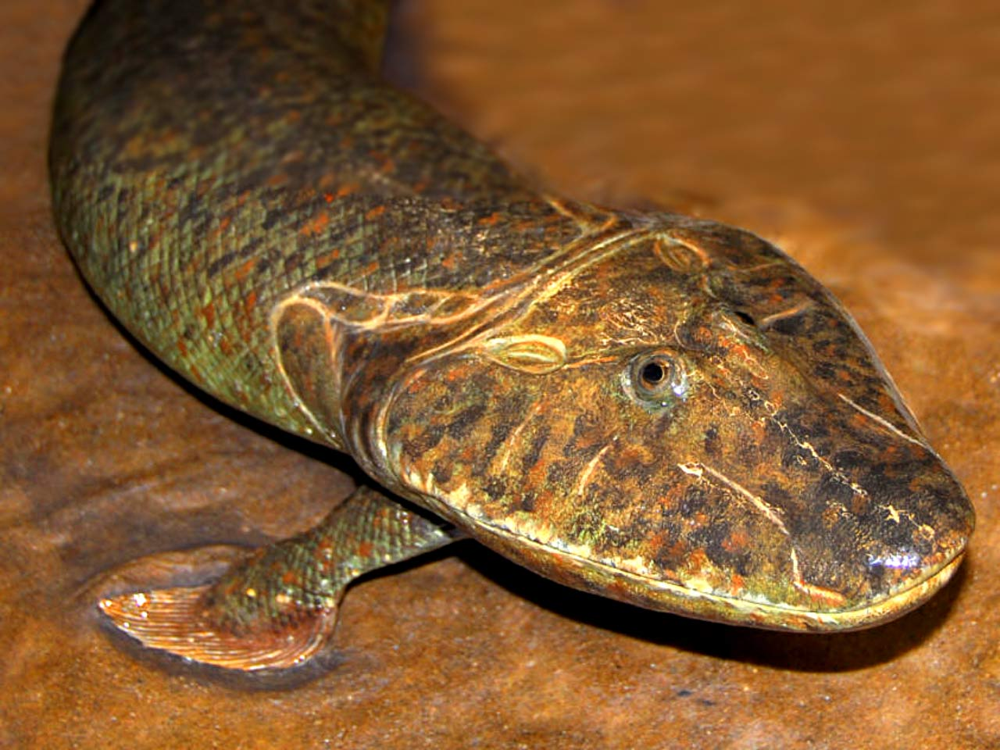

git
Tiktaalik (English pronunciation: /tɪkˈtɑːlɪk/; Inuktitut pronunciation: /tik.ta˩˥ːˈlik/; syllabics ᑎᒃᑖᓕᒃ) is a monospecific genus of extinct sarcopterygian (lobe-finned fish) from the Late Devonian Period, about 375 Ma (million years ago), having many features akin to those of tetrapods (four-legged animals).[1]
- Finding Tiktaaliks
- Collecting Tiktaaliks
- Eating Tiktaaliks
LINK to GIVARAS amazing site